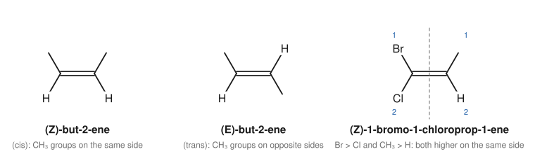
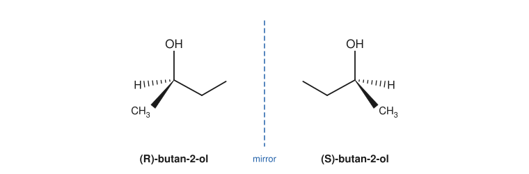
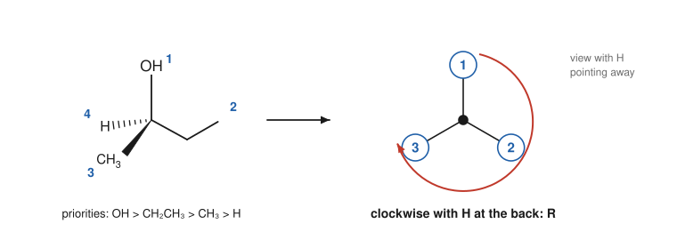
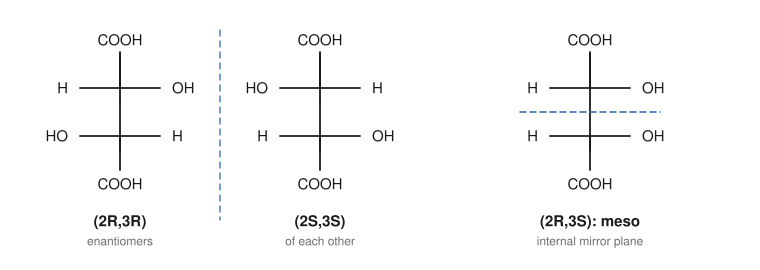

Chapter 3: Isomerism and Stereochemistry¶
Same formula, different molecules
Two compounds can have exactly the same molecular formula and still be different substances, with different boiling points, smells, reactions and effects on the body. Such compounds are isomers. Some isomers differ in which atoms are bonded to which; others have the same connections but a different arrangement in space. The second kind, stereoisomers, can be as subtle as a left hand and a right hand, yet living things tell them apart with great precision. This chapter sorts the kinds of isomerism, shows how to recognise chiral molecules, and teaches the Cahn–Ingold–Prelog rules for naming alkene isomers (E/Z) and stereocentres (R/S).
Learning outcomes
By the end of this chapter you should be able to:
- classify a pair of isomers as constitutional isomers, enantiomers or diastereomers;
- explain why some alkenes have E/Z isomers and assign E or Z using the CIP priority rules;
- recognise stereocentres and chiral molecules, and use symmetry to spot achiral ones;
- assign R or S to a stereocentre drawn with wedges and hashes or as a Fischer projection;
- work out the maximum number of stereoisomers and recognise meso compounds;
- describe optical activity and racemic mixtures, and explain why chirality matters in biology and medicine.
3.1 Kinds of isomerism¶
Isomers have the same molecular formula but different structures. They fall into two main classes.
Constitutional isomers (structural isomers) differ in the order in which atoms are connected. They may differ in the carbon skeleton (butane and 2-methylpropane, both C₄H₁₀), in the position of a functional group (propan-1-ol and propan-2-ol), or in the functional group itself (ethanol and methoxymethane, both C₂H₆O). Constitutional isomers are simply different compounds with different names.
Stereoisomers have the same connections, atom to atom, but a different arrangement of the atoms in space. They are of two kinds:
- Enantiomers are stereoisomers that are non-superimposable mirror images of each other.
- Diastereomers are stereoisomers that are not mirror images. Cis and trans alkenes are diastereomers, and so are many molecules with two or more stereocentres.
flowchart TD
I[Isomers: same molecular formula] --> C[Constitutional isomers: different connectivity]
I --> S[Stereoisomers: same connectivity, different arrangement in space]
S --> E[Enantiomers: non-superimposable mirror images]
S --> D[Diastereomers: not mirror images]
D --> EZ[E/Z isomers of alkenes and rings]
D --> M[Compounds with two or more stereocentres]
A third kind of difference is not isomerism at all. Conformations are the shapes a single molecule takes as it rotates about its single bonds (Chapter 6). Different conformations interconvert millions of times a second at room temperature and cannot be separated. Stereoisomers, by contrast, can be interconverted only by breaking bonds; they are different compounds that can be isolated and stored.
3.2 E/Z isomerism in alkenes¶
Rotation about a C=C double bond would break the π bond (Section 1.5), so the groups on a double bond are fixed in place. When each carbon of the double bond carries two different groups, the molecule can exist in two forms. In but-2-ene, CH₃CH=CHCH₃, the two methyl groups can be on the same side of the double bond (cis) or on opposite sides (trans). These are diastereomers: cis-but-2-ene boils at about 4 °C and trans-but-2-ene at about 1 °C.
If either carbon of the double bond carries two identical groups, there is no isomerism. But-1-ene, CH₂=CHCH₂CH₃, has two hydrogens on C1, and swapping the "sides" gives the same molecule.
The words cis and trans work well when each carbon carries one hydrogen, but become ambiguous when there are three or four different groups. The general method is the E/Z system, based on the Cahn–Ingold–Prelog (CIP) priority rules.
The CIP priority rules¶
At each carbon of the double bond, rank the two attached groups:
- Higher atomic number of the atom directly attached gives higher priority. So Br > Cl > O > N > C > H. (For isotopes, the heavier one wins: D > H.)
- If the attached atoms are the same, move outwards one bond at a time. List the atoms attached to each and compare them in order of decreasing atomic number, at the first point of difference. For example, –CH₂OH has the set (O, H, H) and –CH(CH₃)₂ has (C, C, H). Compare the highest first: O beats C, so –CH₂OH wins, even though the isopropyl group has more carbons.
- Multiple bonds count as duplicated atoms. A C=O carbon is treated as if it carried two oxygens, and a C≡N carbon as if it carried three nitrogens. So –CHO has the set (O, O, H) and outranks –CH₂OH (O, H, H).
Then:
- If the two higher-priority groups are on the same side of the double bond, the isomer is Z (from German zusammen, together).
- If they are on opposite sides, it is E (entgegen, opposite).

Example 3.1: Assigning E or Z
Assign E or Z to the isomer of 3-methylpent-2-ene, CH₃CH=C(CH₃)CH₂CH₃, in which the hydrogen on C2 and the ethyl group on C3 are on the same side.
C2 carries CH₃ and H. CH₃ wins (C > H).
C3 carries CH₃ and CH₂CH₃. Both attach through carbon. Move outwards: CH₃ has (H, H, H) and CH₂CH₃ has (C, H, H). At the first point of difference C > H, so ethyl wins.
The ethyl group is on the same side as the H of C2, so it is on the opposite side to the CH₃ of C2. The two higher-priority groups are on opposite sides: (E)-3-methylpent-2-ene.
Caution: Z is not always cis
Cis and trans describe particular groups (usually the main chain); Z and E describe the highest-priority groups. They often agree, but not always. In 2-bromobut-2-ene, CH₃CBr=CHCH₃, take the isomer in which the two methyl groups (C1 and C4, the main chain) are on the same side. On C2, Br outranks CH₃, and Br is on the opposite side to the C4 methyl, which is the higher group on C3. So the chain is cis, but the isomer is (E)-2-bromobut-2-ene. Use E/Z in names.
Rings show a similar isomerism. In 1,2-dimethylcyclohexane the two methyl groups can be on the same face of the ring (cis) or on opposite faces (trans). The ring cannot turn inside out by rotation without breaking bonds, so the two are diastereomers.
3.3 Chirality¶
Hold your hands up, palm to palm. They are mirror images, but you cannot lay one exactly on top of the other: a left glove does not fit a right hand. An object that cannot be superimposed on its mirror image is chiral (from the Greek for hand). An object that can be superimposed on its mirror image, such as a plain mug or a sphere, is achiral.
Molecules can be chiral too. The commonest cause is a carbon atom bonded to four different groups. Such an atom is a stereocentre (also called a stereogenic centre, chiral centre or asymmetric carbon), and is often marked with an asterisk. Butan-2-ol, CH₃CH(OH)CH₂CH₃, has one: C2 carries H, OH, CH₃ and CH₂CH₃. Its mirror image cannot be superimposed on it, however it is turned.

Symmetry: a quick test¶
A molecule that has a plane of symmetry, a plane that cuts it into two halves that are mirror images of each other, is achiral. Propan-2-ol, (CH₃)₂CHOH, has two identical methyl groups on the central carbon. A plane through C, O and H divides the molecule into mirror-image halves, so it is achiral, and C2 is not a stereocentre.
To find stereocentres quickly:
- Ignore CH₂ and CH₃ carbons (two or more identical H atoms) and any sp² or sp carbon (only three or two groups).
- For each remaining carbon, check whether all four groups are different. Look along each branch until you find a difference: in 3-methylhexane, C3 carries H, CH₃, CH₂CH₃ and CH₂CH₂CH₃, which are four different groups.
Key idea
A molecule with exactly one stereocentre is always chiral. A molecule with two or more stereocentres is usually chiral, but may be achiral if it has an internal plane of symmetry (a meso compound, Section 3.6). The fundamental test is always non-superimposability on the mirror image.
3.4 Naming stereocentres: R and S¶
Each stereocentre has one of two configurations, labelled R (rectus, right) or S (sinister, left). The procedure uses the same CIP priority rules as for E/Z.
- Rank the four groups on the stereocentre from 1 (highest) to 4 (lowest) by the CIP rules.
- Orient the molecule so that the lowest-priority group (4) points away from you, behind the page.
- Trace the path 1 → 2 → 3. If it runs clockwise, the centre is R; if anticlockwise, it is S.

Short cuts for drawings¶
You rarely need to build a model. Two rules handle most drawings:
- Lowest priority on a hashed wedge (pointing away): read the direction of 1 → 2 → 3 directly from the page.
- Lowest priority on a solid wedge (pointing towards you): read the direction, then reverse it. Clockwise on the page means S.
- Lowest priority in the plane of the page: swap it with the group on the hashed wedge. Swapping any two groups inverts the configuration, so assign the new drawing and then reverse your answer.
Example 3.2: Assigning R or S
A drawing of 2-chlorobutane shows C2 with Cl at the top (in the plane), CH₂CH₃ to the lower left (in the plane), CH₃ on a hashed wedge to the lower right and H on a solid wedge to the right. Assign the configuration.
Priorities: Cl (1) > CH₂CH₃ (2) > CH₃ (3) > H (4).
The path Cl (top) → ethyl (lower left) → methyl (lower right): going from top to lower left is anticlockwise, and continuing to the lower right completes an anticlockwise turn. H is on a solid wedge, pointing towards you, so reverse: the true direction is clockwise.
The centre is R: (R)-2-chlorobutane.
Example 3.3: Ranking harder groups
Rank the groups on C2 of 2-hydroxypropanoic acid (lactic acid), CH₃CH(OH)COOH.
The attached atoms are O (of OH), C (of COOH), C (of CH₃) and H. OH is 1 and H is 4. To separate the two carbons, list their substituents: COOH has (O, O, O), counting the C=O oxygen twice, and CH₃ has (H, H, H). So COOH is 2 and CH₃ is 3.
Caution: R/S says nothing about the sign of rotation
R and S are labels from a drawing rule. They do not tell you which way the compound rotates plane-polarised light (Section 3.5). Some R compounds rotate light clockwise and others anticlockwise; the sign must be measured.
3.5 Properties of enantiomers: optical activity¶
Enantiomers have identical physical properties in an achiral environment: the same melting point, boiling point, density, solubility and spectra. They react at the same rate with achiral reagents. They differ in only two ways:
- They rotate plane-polarised light in opposite directions. Light whose waves vibrate in a single plane is passed through a solution of the compound in an instrument called a polarimeter. A chiral compound turns the plane by an angle α. One enantiomer turns it clockwise, called dextrorotatory and labelled (+); the other turns it by the same amount anticlockwise, laevorotatory, (−). Because they rotate light, chiral compounds are said to be optically active.
- They interact differently with other chiral things, including chiral reagents, chiral catalysts and the enzymes and receptors of living things.
The observed rotation depends on the concentration and the path length, so it is converted into the specific rotation, a property of the compound:
where \(\alpha\) is the observed rotation in degrees, \(l\) the path length in decimetres and \(c\) the concentration in g mL⁻¹. The temperature and the wavelength of light (usually the sodium D line) are stated with the value.
A 50:50 mixture of two enantiomers is a racemic mixture (or racemate). Its rotation is zero, because the two contributions cancel exactly. A reaction that makes a stereocentre from achiral starting materials, without any chiral influence, always gives a racemic mixture: there is an equal chance of forming each enantiomer. The enantiomeric excess (ee) of a mixture is the excess of one enantiomer over the other, as a percentage of the whole: a mixture of 75% R and 25% S has an ee of 50%.
Why chirality matters¶
Enzymes and receptors are built from chiral amino acids and are themselves chiral. They distinguish enantiomers as a right hand distinguishes a right glove from a left. The two enantiomers of carvone smell different: (R)-carvone smells of spearmint and (S)-carvone of caraway seed. Almost all the amino acids in proteins have the same configuration, and almost all natural sugars belong to one series. In medicine, the two enantiomers of a chiral drug can have different activities, different side effects or both, which is why drug regulators require the enantiomers of a new chiral drug to be studied separately. The thalidomide tragedy of the late 1950s and early 1960s made this concern widely known; in that case the enantiomers also interconvert in the body, so even a single pure enantiomer would not have been safe.
3.6 Molecules with more than one stereocentre¶
Each stereocentre can be R or S, so a molecule with \(n\) stereocentres has at most \(2^n\) stereoisomers. With two stereocentres there are up to four: (R,R), (S,S), (R,S) and (S,R).
- (R,R) and (S,S) are mirror images: a pair of enantiomers.
- (R,S) and (S,R) are mirror images: another pair of enantiomers.
- (R,R) and (R,S) are stereoisomers that are not mirror images: diastereomers.
Unlike enantiomers, diastereomers have different physical properties (melting point, solubility, boiling point), so they can be separated by ordinary methods such as crystallisation, distillation and chromatography.
Fischer projections¶
For molecules with several stereocentres in a chain, such as sugars, chemists often use Fischer projections. The carbon chain is drawn vertically, with the most oxidised carbon at the top. At each stereocentre, the horizontal bonds point towards you and the vertical bonds point away. A Fischer projection may be rotated by 180° in the plane of the page but not by 90°, which would turn horizontal bonds into vertical ones and invert every centre.
To assign R or S in a Fischer projection: if the lowest-priority group is on a vertical bond (pointing away), read 1 → 2 → 3 directly; if it is on a horizontal bond (pointing towards you), as it usually is, read the direction and reverse it.
Meso compounds¶
Tartaric acid, HOOC–CH(OH)–CH(OH)–COOH, has two stereocentres, so up to four stereoisomers are possible, but only three exist. The (2R,3R) and (2S,3S) forms are enantiomers. The (2R,3S) form has an internal plane of symmetry, a mirror plane between C2 and C3, so it is identical with its own mirror image (2S,3R). A compound that has stereocentres but is achiral because of internal symmetry is a meso compound. Meso-tartaric acid is optically inactive, and it is a diastereomer of the other two.

Example 3.4: Counting stereoisomers
How many stereoisomers does 2,3-dibromobutane, CH₃CHBrCHBrCH₃, have?
There are two stereocentres (C2 and C3), so at most four. But the molecule is symmetrical: both centres carry the same set of groups (H, Br, CH₃ and the other CHBr unit). As with tartaric acid, the (2R,3S) form has a mirror plane and is meso. So there are three stereoisomers: the enantiomers (2R,3R) and (2S,3S), and meso-(2R,3S).
By contrast, 2-bromo-3-chlorobutane, CH₃CHBrCHClCH₃, is not symmetrical and has all four stereoisomers.
Separating enantiomers¶
Because enantiomers have identical physical properties, separating a racemic mixture (called resolution) needs a chiral influence. The classic method reacts the mixture with a single enantiomer of a chiral compound, turning the two enantiomers into two diastereomers. These have different solubilities and can be separated by crystallisation, then converted back. Louis Pasteur achieved the first resolution in 1848 by a rarer route: he noticed that crystals of a salt of racemic tartaric acid came in two mirror-image shapes and separated them by hand. Today chiral chromatography and enzymes are widely used as well.
3.7 Summary¶
Summary
- Constitutional isomers differ in connectivity; stereoisomers differ only in arrangement in space.
- Enantiomers are non-superimposable mirror images; diastereomers are stereoisomers that are not mirror images.
- Alkenes with two different groups on each carbon of the C=C show E/Z isomerism. Rank the groups by the CIP rules: Z if the higher-priority groups are on the same side, E if opposite.
- A carbon with four different groups is a stereocentre. A molecule with a plane of symmetry is achiral.
- R/S: rank 1 to 4, point 4 away, trace 1 → 2 → 3; clockwise is R, anticlockwise is S. If group 4 points towards you, reverse.
- Enantiomers have identical properties except the direction in which they rotate plane-polarised light and their interactions with other chiral substances. A racemic mixture is optically inactive.
- \(n\) stereocentres give at most \(2^n\) stereoisomers; meso compounds reduce the number.
3.8 Exercises¶
Exercise 1
Classify each pair as constitutional isomers, enantiomers, diastereomers or identical: (a) butan-1-ol and butan-2-ol; (b) (R)-butan-2-ol and (S)-butan-2-ol; (c) (Z)-but-2-ene and (E)-but-2-ene; (d) (2R,3R)- and (2R,3S)-2-bromo-3-chlorobutane; (e) (2R,3S)- and (2S,3R)-tartaric acid.
Answer
(a) Constitutional isomers (the OH is in a different position). (b) Enantiomers. (c) Diastereomers. (d) Diastereomers: one centre is the same, the other differs, so they are not mirror images. (e) Identical: this is the meso compound, which is its own mirror image.
Exercise 2
Which of these can show E/Z isomerism? (a) pent-1-ene; (b) pent-2-ene; (c) 2-methylbut-2-ene; (d) 1-chloropropene, ClCH=CHCH₃.
Answer
(a) No: C1 carries two H atoms. (b) Yes: C2 carries CH₃ and H, C3 carries CH₂CH₃ and H. (c) No: C2 carries two CH₃ groups. (d) Yes: C1 carries Cl and H, C2 carries CH₃ and H.
Exercise 3
Rank the following groups by CIP priority, highest first: –CH₂CH₃, –CH=CH₂, –CH₂OH, –CHO, –CH(CH₃)₂.
Answer
Write the set of atoms attached to the first carbon of each: –CHO (O, O, H); –CH₂OH (O, H, H); –CH(CH₃)₂ (C, C, H); –CH=CH₂ (C, C, H), with the duplicated carbon; –CH₂CH₃ (C, H, H).
–CHO > –CH₂OH > then –CH(CH₃)₂ and –CH=CH₂ tie at the first carbon. Go outwards. For isopropyl, the two branches are CH₃ groups, each (H, H, H). For vinyl, one branch is the real CH₂ carbon, with substituents (C, H, H), the C being the duplicate of the first carbon. The duplicate carbon itself counts as carrying three phantom atoms of atomic number zero. The highest-ranked branch of vinyl, (C, H, H), beats the highest-ranked branch of isopropyl, (H, H, H), so vinyl wins.
Order: –CHO > –CH₂OH > –CH=CH₂ > –CH(CH₃)₂ > –CH₂CH₃.
Exercise 4
Mark the stereocentres, if any, in: (a) 3-methylhexane; (b) 3-methylpentane; (c) 2-chlorobutane; (d) 1,2-dichloroethane; (e) 2-aminopropanoic acid (alanine).
Answer
(a) C3 (H, CH₃, ethyl, propyl): one stereocentre. (b) None: C3 carries two identical ethyl groups. (c) C2 (H, Cl, CH₃, ethyl). (d) None: each carbon carries two H atoms. (e) C2 (H, NH₂, CH₃, COOH).
Exercise 5
In a drawing of alanine, H₂N–CH(CH₃)–COOH, the stereocentre has NH₂ at the top (in the plane), COOH to the lower right (in the plane), CH₃ on a solid wedge to the lower left and H on a hashed wedge. Assign R or S.
Answer
Priorities: NH₂ (1, nitrogen) > COOH (2, carbon with O, O, O) > CH₃ (3) > H (4). H points away, so read directly. NH₂ (top) → COOH (lower right) → CH₃ (lower left) is clockwise. The configuration is R. (The alanine found in proteins is S, the mirror image of this drawing.)
Exercise 6
A solution of a pure enantiomer, 0.10 g mL⁻¹, in a 1.0 dm tube gives an observed rotation of +6.0°. (a) What is its specific rotation? (b) What rotation would a racemic mixture give? (c) A sample of the same compound at the same concentration gives +3.0°. What is its enantiomeric excess, and what percentage of each enantiomer does it contain?
Answer
(a) [α] = 6.0 / (1.0 × 0.10) = +60°. (b) 0°. (c) The rotation is half that of the pure enantiomer, so the ee is 50%. The excess is 50% of the (+) enantiomer and the remaining 50% is racemic (25% of each), giving 75% (+) and 25% (−).
Exercise 7
How many stereoisomers are possible for (a) pentane-2,3-diol, CH₃CH(OH)CH(OH)CH₂CH₃; (b) pentane-2,4-diol, CH₃CH(OH)CH₂CH(OH)CH₃? Identify any meso form.
Answer
(a) Two stereocentres (C2 and C3) carrying different sets of groups, so all four stereoisomers exist: two pairs of enantiomers, and no meso form.
(b) Two stereocentres (C2 and C4) with identical sets of groups. The (2R,4R) and (2S,4S) forms are enantiomers; the (2R,4S) form has a mirror plane through C3 and is meso. Three stereoisomers in all.
3.9 Quiz¶
Check your understanding of stereochemistry
Exercise 1
Stereoisomers that are not mirror images of each other are called
- enantiomers
- diastereomers
- constitutional isomers
- conformations
Answer
diastereomers
Exercise 2
Which compound has a stereocentre?
- propan-2-ol
- butan-2-ol
- 2-methylpropan-2-ol
- ethanol
Answer
butan-2-ol
Exercise 3
Viewed with the lowest-priority group pointing away, the path 1 → 2 → 3 is anticlockwise. The configuration is
- R
- S
- E
- Z
Answer
S
Exercise 4
Which group has the highest CIP priority?
- -CH₃
- -CH₂OH
- -OH
- -NH₂
Answer
-OH
Exercise 5
What is the maximum number of stereoisomers for a molecule with three stereocentres?
Answer
8 / eight
Exercise 6
A racemic mixture
- rotates plane-polarised light clockwise
- contains equal amounts of two enantiomers and shows no rotation
- is a single meso compound
- can be separated by simple distillation
Answer
contains equal amounts of two enantiomers and shows no rotation
Exercise 7
Match each term to its meaning.
| A | B |
|---|---|
| chiral | higher priorities on the same side |
| meso | 50:50 mixture of enantiomers |
| Z | not superimposable on its mirror image |
| racemate | has stereocentres but is achiral |
Answer
chiral — not superimposable on its mirror image; meso — has stereocentres but is achiral; Z — higher priorities on the same side; racemate — 50:50 mixture of enantiomers